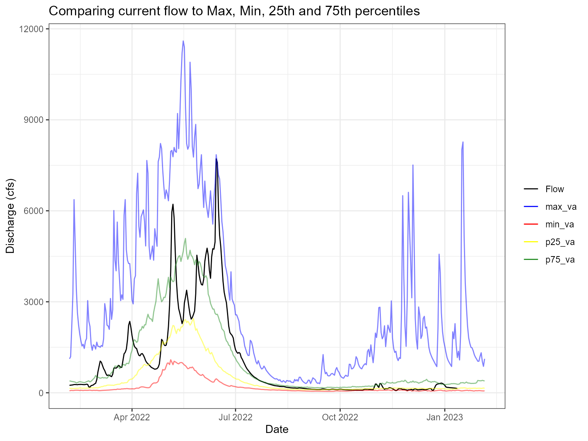

The reason for whitewater has always been to get USGS water data with parallel processing. However, there’s also been the idea of tidying up the returned data. This vignette will go into using some of the functionality in whitewater.
All of the functions in whitewater begin with a prefix ww. This is to help the user search for functions quickly using Rstudios code completion as well as simply remember!
The main flow in whitewater is to start with ww_dvUSGS() and then the user can use that object for further filtering within functions, e.g. ww_wyUSGS(), ww_wymUSGS(), ww_monthUSGS(), etc. We’ll start with just getting daily values of water data and then use that object to supply to the others. Of note, you can specify the water year wy_month, which is the beginning month for that water year.
library(whitewater)
#> Due to potentially crashing (USGS Water Services) REST services keep your parallel processing to
#> 10 cores/workers or less
#> until further notice. Thank you!
library(dplyr)
#>
#> Attaching package: 'dplyr'
#> The following objects are masked from 'package:stats':
#>
#> filter, lag
#> The following objects are masked from 'package:base':
#>
#> intersect, setdiff, setequal, union
library(ggplot2)
library(tidyr)
yaak_dv <- ww_dvUSGS(sites = '12304500',
parameter_cd = '00060',
wy_month = 10)
#> v Yaak River near Troy MT 'daily' was successfully downloaded.This is just a wrapper around dataRetrieval::readNWISdv() except that we’ve added some attributes along the way; drainage area, lat and long, altitude, observations per water year obs_per_wy, observations per month obs_per_month, day of year doy, day of water year wy_doy as well as parsing out the date to month, day, year and wy. As you’ll see below, this helps with EDA and data wrangling.
yaak_dv %>%
ggplot(aes(wy_doy, Flow)) +
geom_line(aes(group = wy, color = wy)) +
scale_color_gradientn(colors = hcl.colors(n = 11, palette = 'Zissou1'))Now if we just want per water year we can call the function ww_wyUSGS(). This function will call the dataRetrieval::readNWISPeak() function in the background if parameter_cd = '00060' is used.
yaak_wy <- yaak_dv %>% ww_wyUSGS()
#> v 'water year' was successfully downloaded.
#> > now starting to gather peak flows using dataRetrieval::readNWISpeak
#> v 12304500 'peak flows' were successfully downloaded.We now have a tibble() with a bunch of summary statistics; mean, maximum, median, standard deviation and some normalization methods (drainage area, scaled by log and standard deviation) per water year. In addition, the function also performs some counting methods as mentioned above so that we can filter out water years that don’t have all (or close to all) the observations. Below you can see that we now have only water years with greater than 360 observations.
yaak_wy %>% filter(obs_per_wy > 360) %>% select(Station, wy, obs_per_wy) %>% count(obs_per_wy)
#> # A tibble: 2 x 2
#> obs_per_wy n
#> <int> <int>
#> 1 365 49
#> 2 366 16
yaak_wy_filter <- yaak_wy %>% filter(obs_per_wy > 360) This will make it nice if you wanted to see the dependence between water year minimum and sum flow. If we didn’t filter we’d be skewing observations since it doesn’t have all of the data!
Another nice tidying process is the summary statistics for all the water years and months. By calling ww_wymUSGS() we can can get this.
yaak_wym <- yaak_dv %>% ww_wymUSGS()
#> v 'water year and month' was successfully downloaded.Again, since we have doy, obs_per_month and wym_count we can filter out water years with less than 12 months and then plot to see monthly statistics over time.
yaak_wym %>%
filter(wym_count == 12,
obs_per_month > 27) %>%
pivot_longer(cols = contains("Flow")) %>%
ggplot(aes(doy, value, group = wy, color = wy)) +
geom_line() +
facet_wrap(~name, scale = 'free')Now if we want only month statistics over time we just use the ww_monthUSGS(). This is essentially just grouping by month and then running the summary statistics of the daily values.
yaak_month <- ww_monthUSGS(yaak_dv)
#> v 'monthly' data was successfully downloaded.Sometimes you just want to compare the current flow (water year or past week, whatever you want) to historical flows. The ww_statsUSGS() function does this for you! It takes the historical values for your parameter (flow in this example) and returns percentiles (dataRetrieval::readNWISstat()) but also combines the current values.
yaak_daily_report <- yaak_dv %>% ww_statsUSGS(temporalFilter = 'daily',
days = 365)
#> v Yaak River near Troy MT 'NWIS Stat' for Temporal Filter (daily) was successfully downloaded.
yaak_daily_report %>%
pivot_longer(c('Flow', 'p25_va', 'p75_va', 'max_va', 'min_va')) %>%
ggplot() +
geom_line(aes(Date, value, color = name, alpha = name %in% c('p25_va', 'p75_va', 'max_va', 'min_va'))) +
scale_color_manual(values = c('black', 'blue', 'red', 'yellow', 'forestgreen')) +
scale_alpha_manual(values = c(1,.5), guide = 'none') +
labs(y = 'Discharge (cfs)', color = '', title = 'Comparing current flow to Max, Min, 25th and 75th percentiles') +
theme_bw()